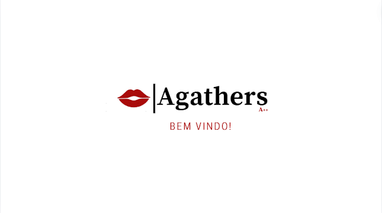
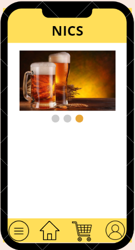
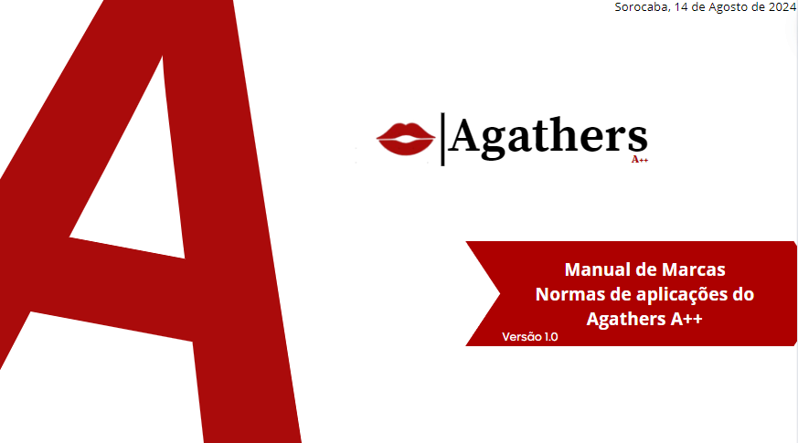
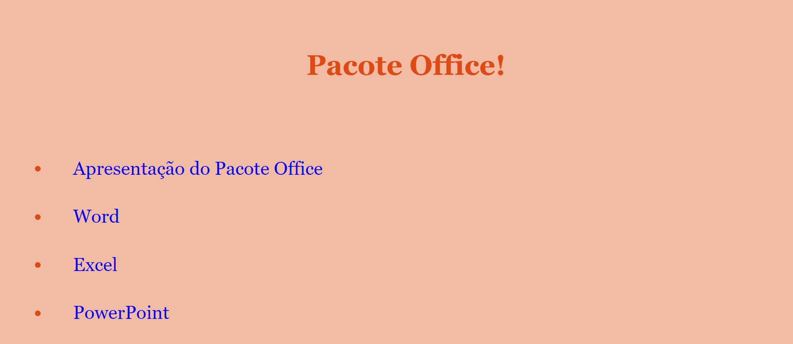
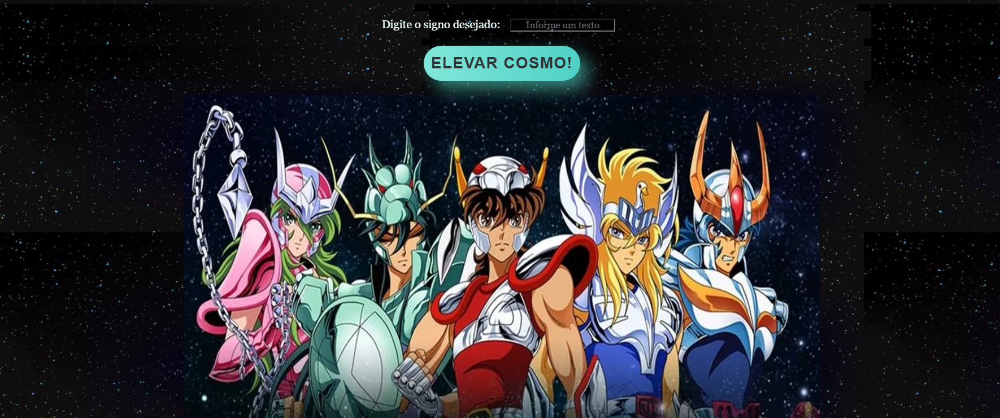
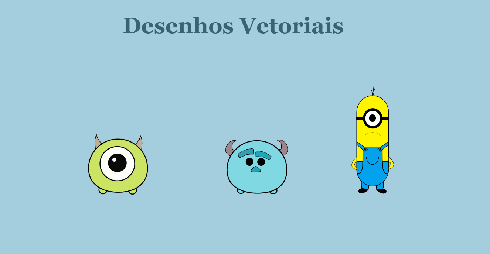
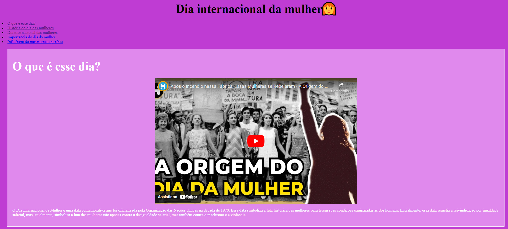
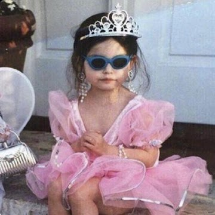
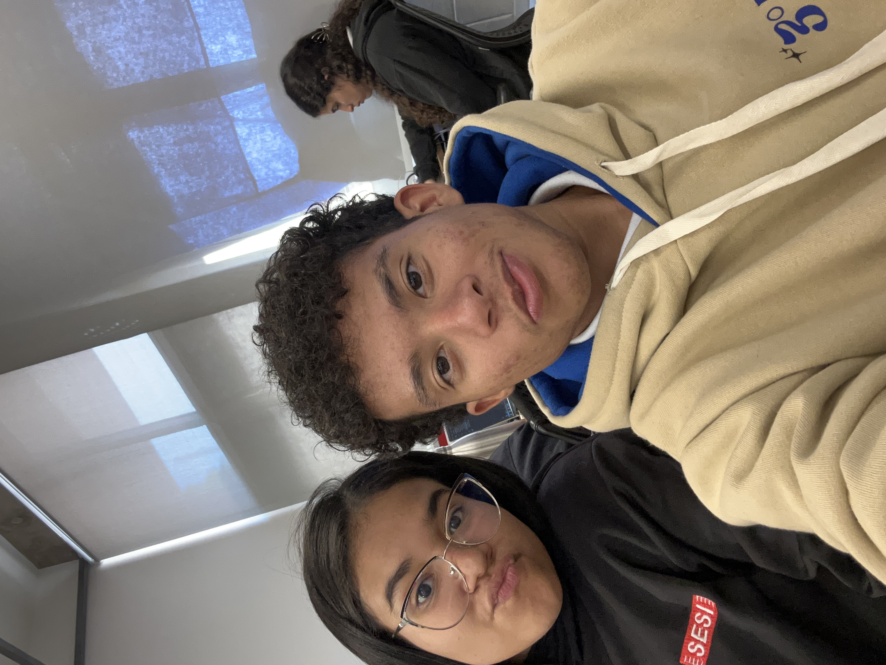

Protótipo
Esse protótipo é do nosso novo projeto, ele é um site para a Nics Choperia. O projeto visa criar uma plataforma online que não apenas apresentará a choperia e seus serviços de maneira atrativa, mas também facilitará o acesso às informações essenciais e ao serviço de delivery. O site terá seções dedicadas para conhecer a história, os serviços da chopperia, as promoções, a programação semanal, detalhes sobre o cardápio, e uma área prática para pedidos de delivery, oferecendo uma experiência completa e conveniente para os clientes.

Sobre
A Agathers é uma empresa especializada na criação de sites informativos que aprimoram a experiência do usuário. Nossa missão é desenvolver plataformas digitais que realmente façam a diferença e ajudem as pessoas de maneira significativa. Buscamos constantemente entregar sites de excelência aos nossos clientes, sempre com um compromisso inabalável com a qualidade. Nossos valores fundamentais são: honestidade, ética, respeito, comprometimento, responsabilidade e empatia. Estes princípios guiam cada projeto que realizamos, assegurando que oferecemos soluções digitais que não apenas atendem, mas superam as expectativas.
Manual de Identidade Visual

Projetos
   
Squad



Beatriz de Oliveira
Meu nome é Beatriz de Oliveira, tenho 17 anos e atualmente estou cursando Desenvolvimento de Sistemas na rede Senai em Sorocaba.

Murilo Zocca
Meu nome é Murilo Zocca, tenho 17 anos e atualmente estou cursando Desenvolvimento de Sistemas na rede Senai em Sorocaba.